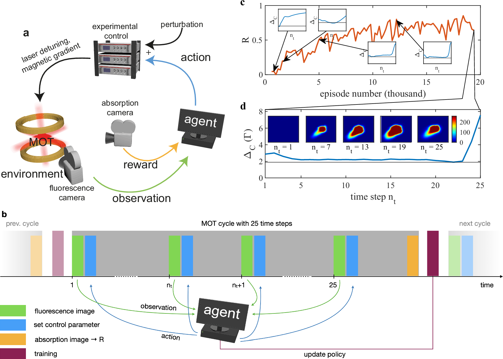
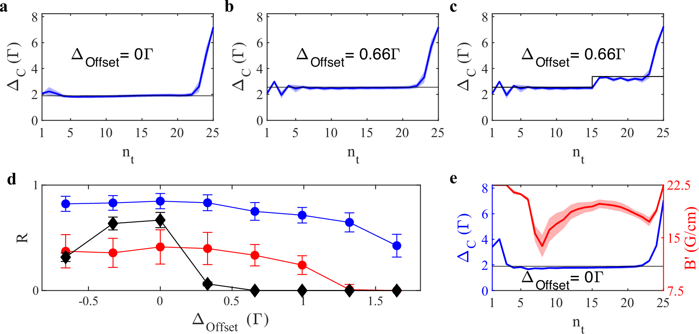
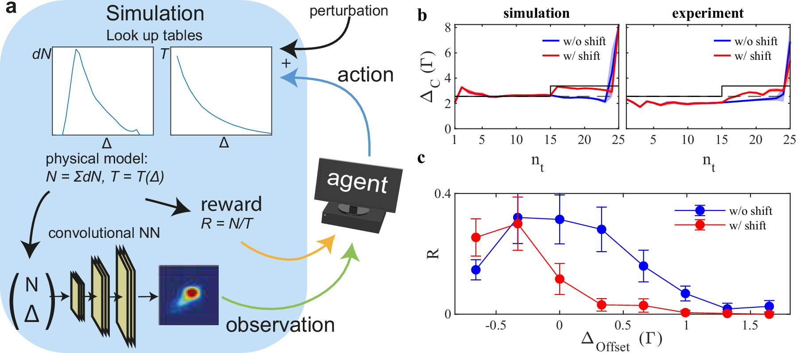
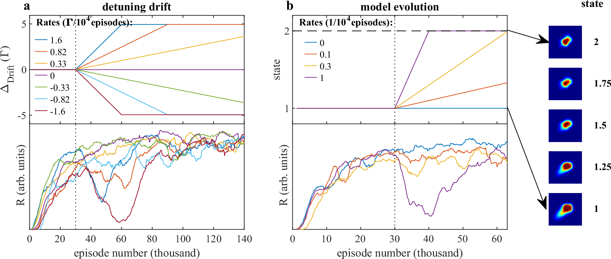

Reinforcement learning in cold atom experiments
Nature Communications · 2024 · 方法借鉴
观测、奖励采样时刻、扰动恢复和持续学习的紧凑范例。
许可：CC BY 4.0。分区详见 筛选依据，未宣称已核验中科院一区。
Fig. 1 决策步长与回报时机
用途： MDP 框架。
画法借鉴： 在闭环框架旁放时间轴，标出每步动作和 episode 末奖励。
解释边界： 稀疏终端奖励不能画成每步均可获取的测量。

Reinschmidt, Malte; Fortágh, József; Günther, Andreas; Volchkov, Valentin V.. Reinforcement learning in cold atom experiments. Nature Communications (2024), Fig. 1. https://doi.org/10.1038/s41467-024-52775-8. CC BY 4.0. 未裁切、未重绘；按比例显示。
Fig. 2 扰动下策略如何恢复
用途： 稳健性与风险。
画法借鉴： 把动作序列、扰动时刻和最终结果对应，区分偏置和突变扰动。
解释边界： 单次扰动恢复不能代表所有异常场景。

Reinschmidt, Malte; Fortágh, József; Günther, Andreas; Volchkov, Valentin V.. Reinforcement learning in cold atom experiments. Nature Communications (2024), Fig. 2. https://doi.org/10.1038/s41467-024-52775-8. CC BY 4.0. 未裁切、未重绘；按比例显示。
Fig. 4 仿真到真实的控制对照
用途： 泛化与迁移。
画法借鉴： 并列画仿真环境构建和两端控制响应，突出迁移接口。
解释边界： 相似轨迹不等于真实分布与仿真完全一致。

Reinschmidt, Malte; Fortágh, József; Günther, Andreas; Volchkov, Valentin V.. Reinforcement learning in cold atom experiments. Nature Communications (2024), Fig. 4. https://doi.org/10.1038/s41467-024-52775-8. CC BY 4.0. 未裁切、未重绘；按比例显示。
Fig. 5 环境漂移中的持续学习
用途： 稳健性与风险。
画法借鉴： 在一条时间轴上标注训练和部署分界，并显示环境变化和回报。
解释边界： 部署后仍在更新参数时，不应称为冻结策略评估。

Reinschmidt, Malte; Fortágh, József; Günther, Andreas; Volchkov, Valentin V.. Reinforcement learning in cold atom experiments. Nature Communications (2024), Fig. 5. https://doi.org/10.1038/s41467-024-52775-8. CC BY 4.0. 未裁切、未重绘；按比例显示。